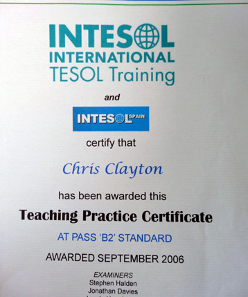

1. Check if they are a qualified English teacher
They should have passed a course for teaching English as a foreign language (e.g. TEFL, TESOL, CELTA, DELTA etc...) As I said above, you can't always trust what teachers say about themselves, so make sure that when you contact a website or a teacher who you would like to have a class with that you ask them to send you a photo of their teacher training certificate (which they will have for passing the course) before you do the first class with them.
Below is a photo of my teaching English as a foreign language certificate:
If they can't provide one of these, don't use them.
2. The older the teacher, the better they more likely are
Although having passed a course to teach English is good, experience of teaching is more important. Like everything, the more you do something, the better you become at doing it.
A teacher who is in their early 20s is likely to have little experience of teaching the language and won't know a lot about English grammar or how to teach (so avoid teachers of this age). So the older a teacher is, the better they are more likely to be.
In addition, when they send you a photo of their teacher training certificate, you will also see the date they qualified (for me it was September 2006). And this gives you a good indication of how long they have been teaching for.
3. You get what you pay for
A good qualified teacher with experience is not going to be cheap. For an hour class with one you should expect to pay 30 or more US dollars. Anybody who offers an online class for less than this will probably not be a good or an experienced teacher.
Unless you only want to practise having an English conversation (just speak and not receive much help), avoid any teacher who offers classes for a lot less per hour (e.g. $10 or $15 per hour).
4. Native teachers are better for higher levels
I know some very good non-native English teachers, but because they haven't grown up with the language they struggle with vocabulary at higher levels. So if your level is upper-intermediate or above, I would recommend using a native speaker.
For lower levels, it is less important to have a native teacher and you will be able to find a very good one for less than you would pay for a native teacher (but make sure they have an English teaching qualification and are not young).
In addition, if you want to improve your pronunciation, I would always recommend a native teacher.
5. Avoid websites where there are few native teachers
When searching on the internet, you will find three types of websites which offer online one-to-one English classes:
- An individual teacher's website
- A company/language school website
- A website that just lists self-employed teachers
Both the company/language school and those that list self-employed teachers will list all the teachers they have that you could have a class with. Make sure before deciding to use a website or company that you look through this list and if you see that only one or two of the teachers teaching English there are native and the rest aren't, avoid it.
What this shows is the website/company pays the teachers little and as a result the quality of the teaching is very likely to not be very good.
6. Ask for recommendations from people you know
Although you can't always trust reviews on the internet about teachers, you can from people you know. So, ask your friends and colleagues if they can recommend any English teacher for one-to-one online classes. But if you do get recommendations, make sure you do what I have recommended above (check they are a qualified teacher etc...).
7. Try a number of teachers and evaluate them before deciding which one is right for you
The first class you have with most teachers is free, very cheap ($1 to $5) or with a big discount (50% or more). So I would recommend that you try a number of different teachers (three or four) before deciding which to use. Follow the advice I have given above for selecting them and use a number of different websites (because often you can only get one cheap or free class per website).
If the trial or free class is with a company/language school, always ask the person you are having the class with if they will be your teacher. Often for these it won't be, it will be the owner of the company or a senior teacher and when you start paying for classes, you will then be given another teacher. If they say they won't be, ask if you can have a free class or cheap class with the teacher you'll have the class with to see if they are right for you.
The last thing you need to do (and this is really important for choosing a good teacher) is when you are having the first class with each teacher is to test/evaluate them to see what their knowledge and teaching ability is. To do this, you are going to both ask each some questions and look for some things when you are having the class with them. The teacher who performs the best in this, is the teacher you should have classes with.
But what should you ask and look for? You don't have to worry about this, because I have created a list of 7 things you should do in your first class to see if they are a good teacher or not. You will find these in my article called 'Things to do in your first class to see if an online English teacher is good or not'
That's it
By both knowing what to look for and ask, and having classes with three or four teachers you should be able to find a teacher who is right for you (somebody you can understand, knows what they are doing, is professional and you can trust). After you have found them, you will start your journey on improving your English as quickly as you can.